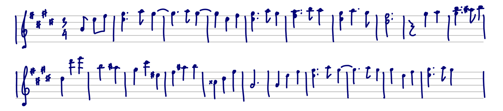
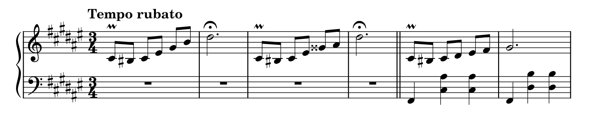
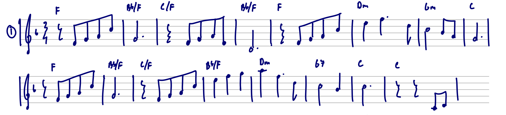

4 Waltzes
2022-2024
2022-2024
4 Waltzes is a collection of short waltzes composed at my dorm room during my high school times between December 2022 and February 2024. All of the pieces was composed in one day and has a length of no longer than 2 minutes and a half. The order of the waltzes is followed by the date of composition.
"On Christmas Eve, alone in the quiet dorm..."
Christmas Eve Waltz (Waltz in E major) was composed by IcyAlmondEarth on 24th December 2022, marked Composition No.55. I first published the piece privately on 25th December 2022 and exactly two years later on 25th December 2024 it became public. Despite being the 2nd waltz I published, it's actually the 17th waltz I composed.
The Christmas Eve that year was the first day of the new year break. Most of other students had already left dorm, so the dorm was left really quiet. The recording of my "17 sai no uta" cover was done on that day, too. While waiting to be picked up, I sat at the piano and wanted to make a piece that resembles the atmosphere; a nice and tranquil dorm room with a cool wind from the balcony. I was kind of into Takashi Yoshimatsu at that time, so I took the inspiration from his "Waltz in Green" and the piece was composed and finished on that same day. The piece was recorded on the next morning.
Christmas Eve Waltz consists of 5 sections, making up a ternary form A-B-A' with an introduction and a codetta. The introduction includes high arpeggiated chords and a winter-like melody. The A section starts off with the melody and a closed position triads doing the waltz rhythm which later expands to open position chords. The melody of the B section is played with thirds. The A section comes back with a more majestic repetition, leading to the end of the piece. The piece ends with a codetta with a similar feeling to the introduction.
"Lemon tea is indeed a nice drink."

Lemon Tea Waltz (Waltz in G-flat major) was composed by IcyAlmondEarth on 7th July 2023, marked Composition No.70. The piece was also published privately on 12th July 2023. It's the 20th waltz I composed.
In Japanese culture, the 7th of July is a day of Tanabata (about couple things and hanging a paper note on a bamboo tree). My high school, which is kind of Japan affliated, also had the tree set up. I wanted to compose something inspired by that, so I picked the key of G-flat major for the Japanese feeling (the pentatonic of course). I am not really sure that I did achieve that Japanese feeling though. Initially, there was no nickname for this one. I just got the name out of a glass of lemon tea I was making that evening. So yeah, the lemon tea waltz was born.
Lemon Tea Waltz consists of 3 sections, making up a ternary form A-B-A. It is the shortest piece among the 4 waltzes with only a minute long. The structural detail is similar to the Christmas Eve Waltz. The A section starts off with closed position triads and then expands to open position chords. The B section uses the extended royal road progression which can usually be found in Japanese songs. The A section comes back with only a bit of alternations at the end.
"Sleepily at the piano"
Daydream Waltz (Waltz in F-sharp major; originally Valse-Impromptu) was composed/improvised by IcyAlmondEarth on 24th September 2023, marked Composition No.75. It's the 21st waltz I composed.
It was the week of the final exam. I already spent plenty much of time on reviews so I decided to relax myself and play the piano. The Daydream Waltz was the piece I improvised that day out of sleepiness. So I guess the piece is the closest one to the point of sleeping or "dreaming", floating around nowhere.
Daydream Waltz consists of 5 sections, making up a ternary form A-B-A' with a short introduction and a codetta. The introdution plays the kind of alternated melody of the main theme in a floating feeling. The A section plays the main theme with rubato, accompanied with open position waltz rhythm chords. The piece modulates to C-sharp minor for a short while in the B section. The A' section returns with a bit of alternation (because it's improvised and my memory slipped) similarly to how dream works. The piece concludes with a codetta, still in a floating feeling, and chord intervals rising up towards the end.
"The balcony, a sunflower, and the final days towards the end..."
